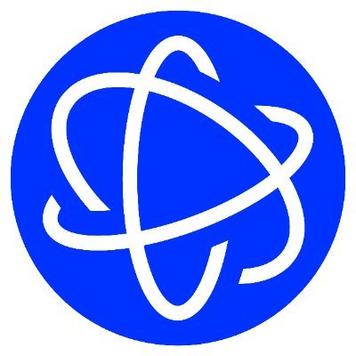
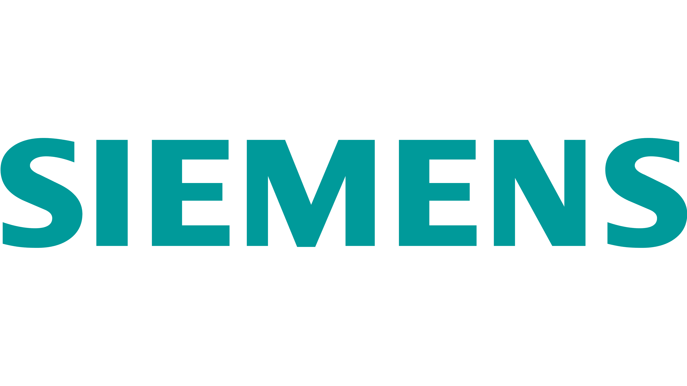

Visual anomaly detection
Finding subtle defects and irregularities in complex visual data.
Purdue University · ECE PhD
I am Joseph Huang, a researcher working at the intersection of computer vision, image processing, and trustworthy visual intelligence.

01 — About
I am pursuing a PhD in Electrical and Computer Engineering at Purdue University, where I am a Graduate Research Assistant in the Video and Image Processing Laboratory (VIPER), advised by Professor Fengqing Maggie Zhu.
My current work spans visual anomaly detection and video compression—developing methods that are rigorous enough for research and useful enough for the real world.
Research focus
Finding subtle defects and irregularities in complex visual data.
Advancing how visual information is represented, compressed, and understood.
Turning computer-vision research into reliable tools for real workflows.
02 — Journey
From research lab to production software, I enjoy moving between fundamental questions and carefully made systems.
Purdue University · West Lafayette, IN
Purdue University
Purdue University
Research
Purdue University · 2025 — now

Industry
Coherent Corp. · Summer 2025

Industry
Siemens Digital Industries · 2024
Industry
Kinze Manufacturing · 2023
Selected publication
Research toward robust visual inspection in challenging medical imaging settings.
Read the publication →